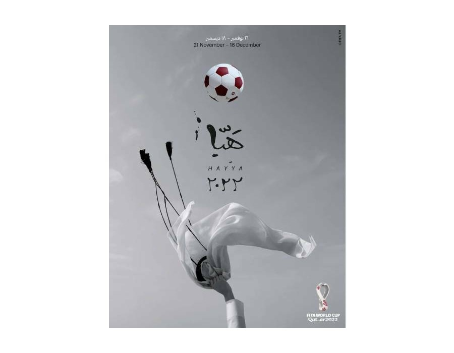

- 
Official Poster
The poster was designed by Qatari female artist Bouthayna Al Muftah and depicts traditional Qatari headdress 'ghutra' being thrown in the air with a football on top, showing Qatar's iconic maroon hue. The poster depicts celebration and the nation’s love for the sport.

Bouthayna Al Muftah
Bouthayna is the official poster artist for the 2022 FIFA World Cup. In June 2022, she unveiled her poster at Hamad International Airport in Doha. A total of eight posters are produced to represent Qatar's passion for soccer.
In July 2022, she unveiled her poster at the Design Museum in London as part of the exhibition "Football: Designing the Beautiful Game". Also present at the unveiling was the official ambassador of the 2022 FIFA World Cup Qatar, David Beckham.